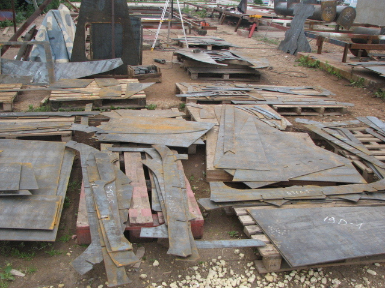
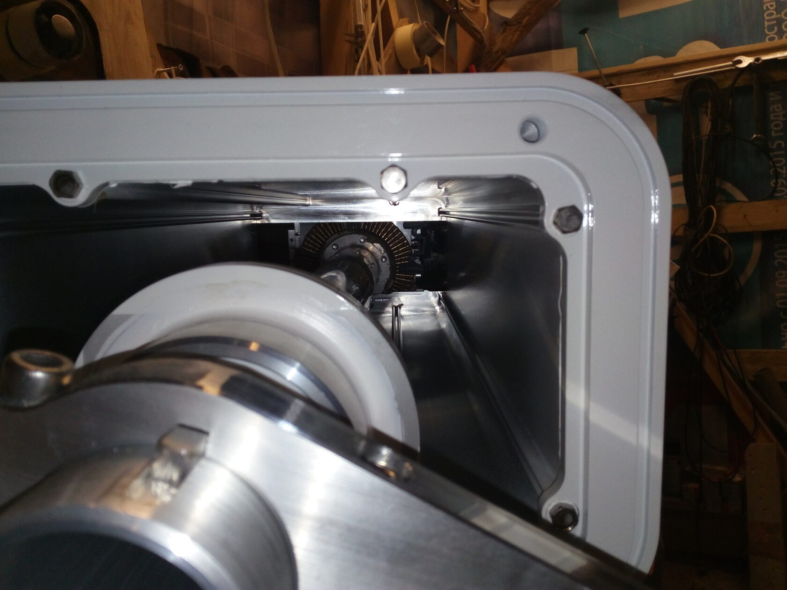
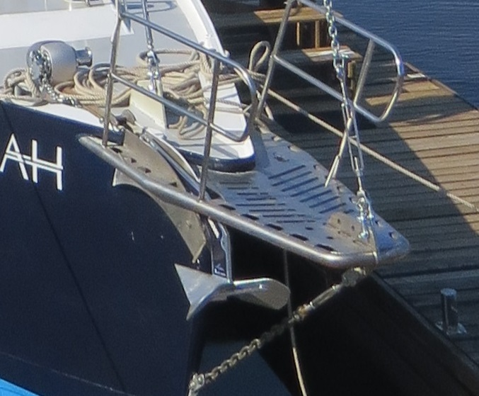

История строительства яхты «Эридан»
-
1. Замысел
Покупать, строить, или не делать ничего? Как мы дошли до жизни такой читайте в этой статье.
03.04.2023 -

2. Корпус и балластСтальной корпус для сравнительно большой круизной лодки – хороший выбор? Почему сталь?
03.04.2023 -
 3. Окраска, шпаклёвка и теплоизоляция
3. Окраска, шпаклёвка и теплоизоляцияОкраска для стальной лодки – важнейший фактор защиты от коррозии. Сталь отлично проводит тепло, и корпус нуждается в хорошей теплоизоляции, чтобы в холод и жару было комфортно.
08.04.2023 -

4. Перо руляПеро было сварено из нержавейки, диаметр нержавеющего баллера был увеличен с 70 мм (по Брюсу) до 90 мм.
01.06.2023 -

-